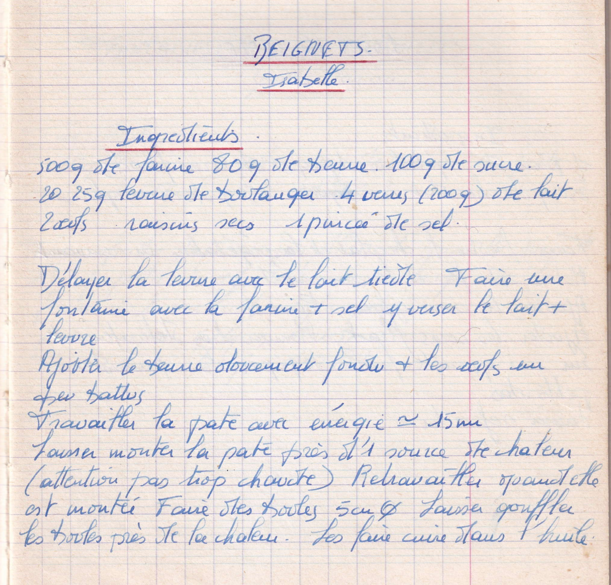

BEIGNETS
Isabelle

LISTE DES INGREDIENTS
- 500gr de farine
- 80gr de beurre
- 100gr de sucre
- 20/25gr de levure boulangère
- 4 verres (200g) de lait (??)
- 2 oeufs
- Raisins secs
- 1 pincée de sel
PREPARATION
- délayer la levure avec le lait tiède
- Faire une "fontaine?" avec la farine + sel et y verser le lait + levure
- Ajouter le beure doucement fondu + les oeufs un peu battus
- Travailler la pate avec énergie environ 15min
- Laisser monter la pate près d'une source de chaleur (Attention pas trop chaude)
- Retravailler quand elle est montée
- Faire des boules de 5cm
- Laisser gonfler les boules près de la chaleur
- Les faire cuire dans l'huile